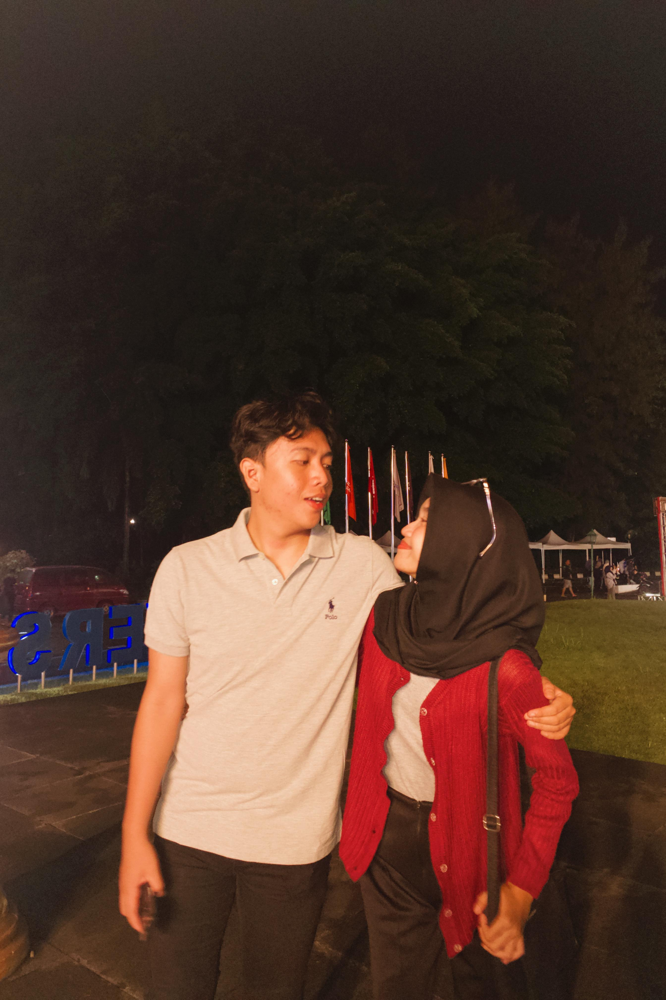

Kenangan



Dari: Pacarmu Anas ❤
My loveee, congratulationnnss! 🎉💖 Finally, the internship you’ve been fighting for is completed! I’ve seen for myself how you struggled from the beginning, how tired you were, how you stayed up late. But I know that you are strong and amazing, and today you have proven it all! I’m so happy to be by your side, to help as much as I can, and to see every step you’ve taken. For me, it’s not just the final result that makes me proud, but the journey we’ve been through together. You’re not alone, my loveee, I’m always here to support and accompany you, now and in the future. I hope this will be the beginning of many more successes you will achieve. I believe your future will be bright because you are extraordinary! Never doubt yourself, okay? Because I believe in you completely. I love youuu so muuuch! ❤️😘
Ya Allah, terima kasih atas semua rahmat dan pertolongan-Mu yang telah mendampingi langkahnya hingga hari ini. Engkau telah memberinya kekuatan untuk menyelesaikan kerja praktiknya dengan baik, dan aku bersyukur bisa menyaksikan setiap perjuangan dan usahanya. Ya Allah, aku memohon, lancarkanlah setiap langkahnya ke depan. Berikanlah dia kemudahan dalam menyelesaikan studinya, keberkahan dalam ilmunya, serta jalan yang terang untuk masa depannya. Jadikanlah semua usahanya bernilai kebaikan, dan bimbinglah dia menuju kesuksesan yang Engkau ridhoi. Aku juga berdoa agar Engkau selalu menjaga kesehatannya, melapangkan hatinya saat menghadapi tantangan, serta memberinya kebahagiaan dalam setiap langkah hidupnya. Biarkan aku terus berada di sisinya, mendukung dan menyayanginya dengan sepenuh hati. Semoga semua impian dan harapan yang ia perjuangkan bisa terwujud dengan indah. Aamiin ya Rabbal ‘Alamiin. 🤲💓.
My loveee, your internship seminar may be over, but your journey is still long, and I know you will face many amazing things ahead! I hope this is not just the end of one phase but also the beginning of a bigger chapter in your life. Keep being yourself—always passionate, determined, and never giving up. Whatever comes your way, I believe you can get through it just like you always have. Remember, I am always here, supporting you every step of the way, believing in your abilities, and ready to stand by your side through every challenge. Don’t be afraid to dream bigger, my love. I know that one day, all your hard work and efforts will take you to the place you’ve always dreamed of. I can’t wait to see you achieve all the incredible things waiting for you in the future! I’m so proud of you, and I love you so much! 💖✨